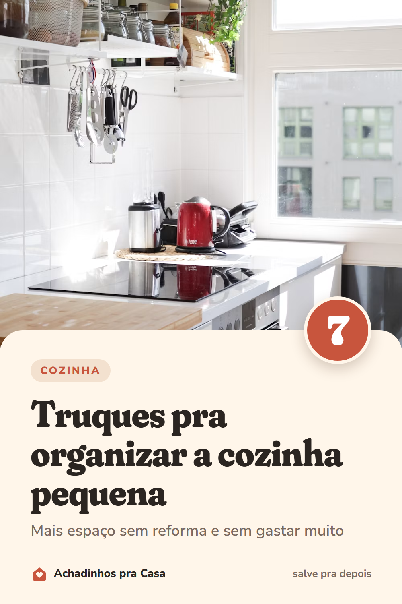
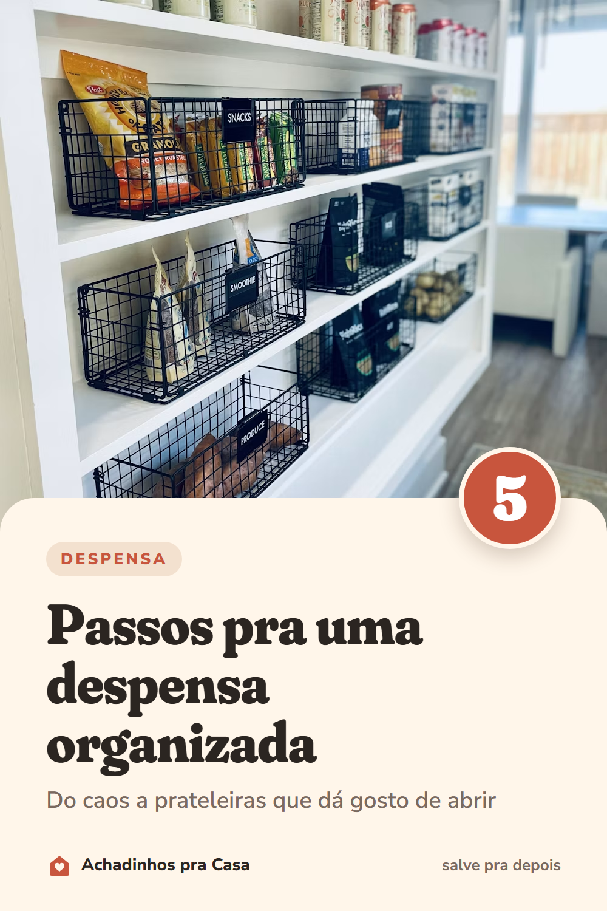
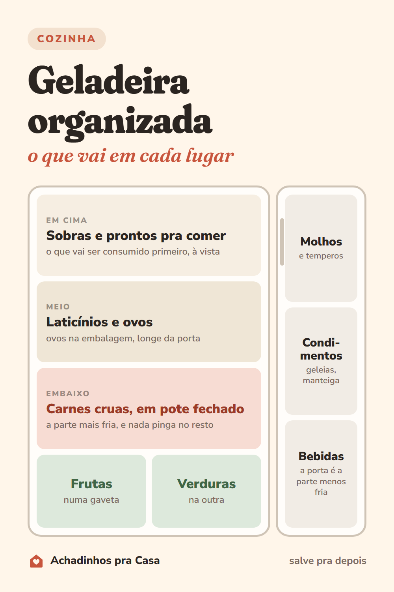

Achadinhos pra deixar a casa organizada
Dicas de organização e produtos baratos que resolvem problema de verdade na casa e na cozinha, escolhidos um a um.
Dicas


Dicas de organização e produtos baratos que resolvem problema de verdade na casa e na cozinha, escolhidos um a um.


